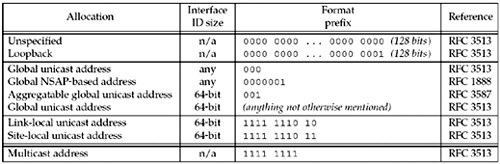
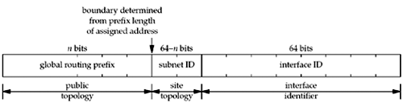
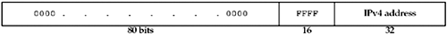
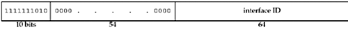
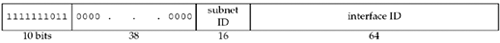

| [ Team LiB ] |
|
A.5 IPv6 AddressesIPv6 addresses are 128 bits long and are usually written as eight 16-bit hexadecimal numbers. The high-order bits of the 128-bit address imply the type of address (RFC 3513 [Hinden and Deering 2003]). Figure A.7 shows the different values of the high-order bits and what type of address these bits imply. Figure A.7. Meaning of high-order bits of IPv6 addresses. These high-order bits are called the format prefix. For example, if the high-order 3 bits are 001, the address is called a global unicast address. If the high-order 8 bits are 11111111 (0xff), it is a multicast address. Global Unicast AddressesThe IPv6 addressing architecture has evolved based on lessons learned from deployment and from IPv4. The original definition of aggregatable global unicast addresses, which in Figure A.7 begin with a 3-bit prefix of 001, had a fixed structure built into the address. This structure was removed by RFC 3587 [Hinden, Deering, and Nordmark 2003], and while the addresses beginning with the 001 prefix will be the first ones assigned, there is no difference between them and any other global address. These addresses will be used where IPv4 unicast addresses are used today. The format of aggregation-based unicast addresses is defined in RFC 3513 [Hinden and Deering 2003] and RFC 3587 [Hinden, Deering, and Nordmark 2003] and contains the following fields, starting at the leftmost bit and going right:
Figure A.8 illustrates the format of a global unicast address. Figure A.8. IPv6 aggregatable global unicast addresses. The interface ID must be constructed in modified EUI-64 format. This is a variation of IEEE EUI-64 format [IEEE 1997], which is a superset of the 48-bit IEEE 802 MAC addresses that are assigned to most LAN interface cards. This identifier should be automatically assigned for an interface based on its hardware MAC address when possible. Details for constructing modified EUI-64-based interface identifiers are in Appendix A of RFC 3513 [Hinden and Deering 2003]. Since a modified EUI-64 can be a globally unique identifier for a given interface, and an interface can identify a user, the modified EUI-64 format raises certain privacy concerns. It may be possible to track the actions and movements of a given user, for example, where they bring their roaming laptop, just from the modified EUI-64 value in their IPv6 address. RFC 3041 [Narten and Draves 2001] describes privacy extensions to generate interface identifiers that change several times per day to avoid this privacy concern. 6 bone Test AddressesThe 6bone is a virtual network used for early testing of the IPv6 protocols (Section B.3). Although aggregatable global unicast addresses are being assigned, sites that do not qualify for address space based on the rules used by regional registries can use a special format of these addresses on the 6bone (RFC 2471 [Hinden, Fink, and Postel 1998]), as shown in Figure A.9. Figure A.9. IPv6 test addresses for 6bone.
These addresses are considered temporary, and nodes using these addresses will have to renumber when aggregatable global unicast addresses are assigned. The high-order two bytes are 0x3ffe. The 6bone site ID is assigned by the chair of the 6bone activity. These assignments are meant to reflect how IPv6 addresses would be assigned in real-world environments. 6bone activity is winding down [Fink and Hinden 2003] now that IPv6 production deployment is well underway (in 2002, more production address allocations were made than the 6bone had allocated in eight years). The subnet ID and interface ID are used as above for subnet and node identification. In Section 11.2, we showed the IPv6 address for the host freebsd in Figure 1.16 as 3ffe:b80:1f8d:1:a00:20ff:fea7:686b. The 6bone site ID is 0x0b801f8d and the subnet ID is 0x1. The low-order 64 bits are the modified EUI-64 constructed from the MAC address of the host's Ethernet card. IPv4-Mapped IPv6 AddressesIPv4-mapped IPv6 addresses allow IPv6 applications on hosts supporting both IPv4 and IPv6 to communicate with IPv4-only hosts during the transition of the Internet to IPv6. These addresses are automatically created by DNS resolvers (Figure 11.8) when a query is made by an IPv6 application for the IPv6 addresses of a host that has only IPv4 addresses. We saw in Figure 12.4 that using this type of address with an IPv6 socket causes an IPv4 datagram to be sent to the IPv4 host. These addresses are not stored in any DNS data files; they are created when needed by a resolver. Figure A.10 shows the format of these addresses The low-order 32 bits contain an IPv4 address. Figure A.10. IPv4-mapped IPv6 address. When writing an IPv6 address, a consecutive string of zeros can be abbreviated with two colons. Also, the embedded IPv4 address is written using dotted-decimal notation. For example, we can abbreviate the IPv4-mapped IPv6 address 0:0:0:0:0:FFFF:12.106.32.254 as ::FFFF:12.106.32.254. IPv4-Compatible IPv6 AddressesIPv4-compatible IPv6 addresses were also planned to be used during the transition from IPv4 to IPv6 (RFC 2893 [Gilligan and Nordmark 2000]). The administrator for a host supporting both IPv4 and IPv6 that does not have a neighbor IPv6 router should create a DNS AAAA record containing an IPv4-compatible IPv6 address. Any other IPv6 host with an IPv6 datagram to send to an IPv4-compatible IPv6 address will then encapsulate the IPv6 datagram with an IPv4 header; this is called an automatic tunnel. However, deployment concerns have reduced the usage of this feature. We will talk more about tunneling in Section B.3 and show an example of this type of IPv6 datagram encapsulated within an IPv4 header in Figure B.2. Figure A.11 shows the format of an IPv4-compatible IPv6 address. Figure A.11. IPv4-compatible IPv6 address.
An example of this type of address is ::12.106.32.254. IPv4-compatible IPv6 addresses can also appear in the source or destination of nontunnelled IPv6 packets when using the SIIT IPv4/IPv6 transition mechanism (RFC 2765 [Nordmark 2000]). Loopback AddressAn IPv6 address consisting of 127 zero bits and a single one bit, written as ::1, is the IPv6 loopback address. In the sockets API, it is referenced as in6addr_loopback or IN6ADDR_LOOPBACK_INIT. Unspecified AddressAn IPv6 address consisting of 128 zero bits, written as 0::0, or just ::, is the IPv6 unspecified address. In an IPv6 packet, the unspecified address can appear only as the source address in packets sent by a node that is bootstrapping, before the node learns its IPv6 address. In the sockets API, this address is called the wildcard address. Specifying it, for example, to bind for a listening TCP socket, indicates that the socket will accept client connections destined to any of the node's addresses. It is referenced as in6addr_any or IN6ADDR_ANY_INIT. Link-Local AddressA link-local address is used on a single link when it is known that the datagram will not be forwarded beyond the local network. Example uses are automatic address configuration at bootstrap time and neighbor discovery (similar to IPv4's ARP). Figure A.12 shows the format of these addresses. Figure A.12. IPv6 link-local address. These addresses always begin with 0xfe80. An IPv6 router must not forward a datagram with a link-local source or destination address to another link. In Section 11.2, we show the link-local address associated with the name aix-6ll. Site-Local AddressAs of this writing, the IETF IPv6 working group has decided to deprecate site-local addresses in their current form. The forthcoming replacement may or may not finally use the same address range as was originally defined for site-local addresses (fec0/10). Site-local addresses were meant to be used for addressing within a site without the need for a global prefix. Figure A.13 shows the originally defined format of these addresses. Figure A.13. IPv6 site-local address. An IPv6 router must not forward a datagram with a site-local source or destination address outside of that site. |
| [ Team LiB ] |
|